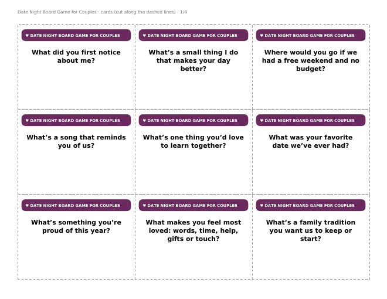

Printable Board Games › Date Night Board Game for Couples
Date Night Board Game for Couples (Free Printable)
A stay-at-home date in a PDF. Roll, move, and answer questions you might never think to ask each other. About 30–45 minutes.


What’s in the PDF
- A full-page 40-square game board (US Letter, landscape; prints fine on A4).
- 36 cut-out cards.
- Rules on one page, plus a QR code to our free iPhone app.
- 2 players (or two couples as teams) · adults. You need one die and a coin or button for each player.
How to play
- Both players start on HELLO. Roll one die and move.
- Land on a ♥ square: your partner reads you a card and you answer it honestly. Then they can answer it too if they like.
- Do what the special squares say.
- The first to reach the finish chooses your next date, and the other one plans it.
- Skip any card you want. This is for fun, not a test.
A few of the cards
- What did you first notice about me?
- What’s a small thing I do that makes your day better?
- Where would you go if we had a free weekend and no budget?
- What’s a song that reminds you of us?
- What’s one thing you’d love to learn together?
- What was your favorite date we’ve ever had?
- What’s something you’re proud of this year?
- What makes you feel most loved: words, time, help, gifts or touch?
Questions
Is it really free?
Yes. Print as many copies as you need for home, classroom, church or youth group. Please link to this page rather than re-uploading the file.
What paper should I use?
Card stock for the board and cards lasts longest. Plain paper glued onto a cereal box works well too.